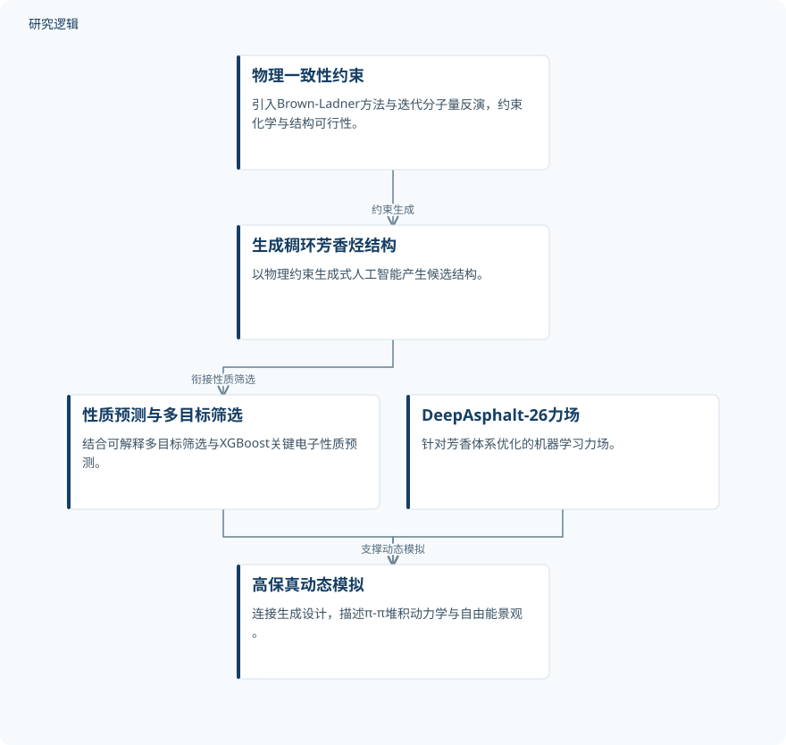

摘要解读
融合生成式人工智能与机器学习力场的稠环芳香烃逆向设计及高保真动力学模拟
Fusing generative AI and ML-FFs for inverse design and high-fidelity dynamic simulation of fused-ring aromatic hydrocarbons
解读更新 2026-11-10 11:49 · 依据公开摘要整理，未核验全文细节
稠环芳香烃的逆向设计，不仅要在庞大的化学空间中找到候选结构，还要检验其动态行为。这项研究将物理约束生成、性质筛选与机器学习力场整合起来，值得关注的是生成设计与动态模拟如何衔接。
文章目录
找到候选分子之后，还需要动态检验
稠环芳香烃的理性设计面临三重障碍：化学空间庞大、量子模拟成本高，以及分子生成与动态验证之间的脱节。因此，研究问题不仅是生成结构，还包括如何约束结构的合理性、预测目标性质，并进一步描述分子的动态行为。
从物理约束生成接向机器学习力场
研究构建了一个集成计算平台，将物理约束生成式人工智能、可解释的多目标筛选和高保真机器学习力场结合起来。其中，物理一致性模块引入Brown-Ladner方法与迭代分子量反演，从生成起点约束化学与结构可行性；XGBoost预测器则用于预测关键电子性质。
面向动态模拟，作者开发了专门针对芳香体系优化的DeepAsphalt-26机器学习力场。平台由此将候选结构生成、性质筛选与动态模拟连接起来，服务于稠环芳香烃的逆向设计。
依据摘要整理的生成与动态模拟关系


概括摘要明确陈述的功能环节及其衔接，不代表论文原图，也不补充具体实验配置。
下载 SVG图示关系说明
实线表示相邻阶段的信息流，虚线表示跨阶段联系或反馈。
物理一致性约束 → 生成稠环芳香烃结构：约束生成；生成稠环芳香烃结构 → 性质预测与多目标筛选：衔接性质筛选；性质预测与多目标筛选 → 高保真动态模拟：连接动态评价；DeepAsphalt-26力场 → 高保真动态模拟：支撑动态模拟
摘要报告了结构可行性与动态模拟表现
摘要称，生成结构具有多样性、新颖性和理论上的可合成性，并经过实验基准验证；XGBoost能够准确预测关键电子性质。这里的理论可合成性不等于实际完成合成，实验基准验证的具体对象与判据仍需进一步阅读确认。
在动态模拟方面，摘要报告DeepAsphalt-26达到密度泛函理论级别的精度，同时将分子动力学加速两个数量级，并准确再现π-π堆积动力学与自由能景观。这些是摘要明确报告的结果，但不能据此推断其在所有芳香体系或模拟条件下均有同等表现。
精度、加速与验证范围仍待核对
本次解读仅依据完整摘要，未据此声称已阅读全文。摘要未给出样本规模、训练与测试划分、电子性质的具体指标，也未说明实验基准的组成、力场误差及加速比较的具体基线。因此，目前无法判断结果的统计覆盖范围、独立验证程度与跨体系泛化边界；这些信息未在摘要中报告，并不意味着论文没有开展相应工作。
阅读启发：关注生成与动态评价的连接
阅读启发：对于生成式设计，值得继续追问的是，生成阶段的物理可行性约束如何与后续动态评价相衔接，以及电子性质筛选与动态行为之间如何共同影响候选结构的选择。进一步阅读时，可优先核对这些环节的接口和验证依据，而不宜直接把该分子体系的结论外推为工程结构可靠性或智能运维效果。
以上为本站阅读启发与建议，不是论文已验证的结论。